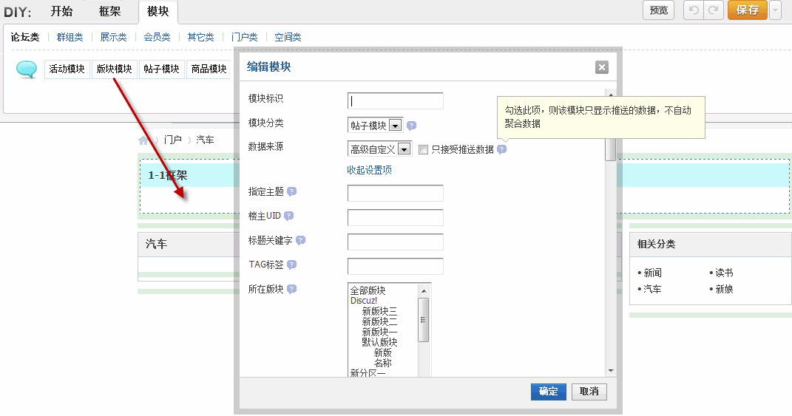
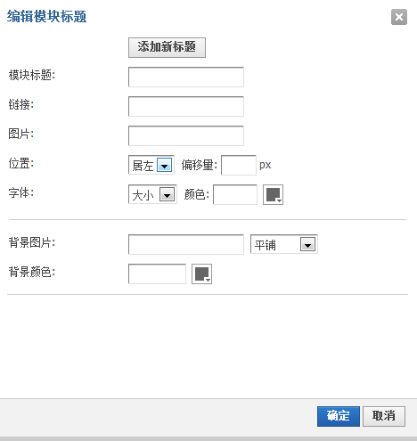

DIY
系统在页面预留了 DIY 区域，站长可以通过可视化的页面拖拽，实现站内数据聚合的多数据类型、多页面、多区域、多位置任意展示，让社区的媒体价值得到淋漓尽致的展现。下面我们来看如何 DIY：
选择合适的模块，拖到框架中，将会弹出模块的属性窗口：
我们可以在这个属性窗口中设置这个帖子模块的属性，模块标识、模块分类、数据来源等，根据自己的需要设定好条件后点击【确定】即可，这时DIY模块就已经添加完成了，点击确定以后，会再次弹出一个该模块的标题样式设置窗口：
在这里定义这个模块的框架标题显示样式，设置这个模块框架的标题、链接、图片、标题的位置、背景等属性，设置完成后点击确定提交即可；
完成后，点击编辑，还可以对模块的模块属性、模块数据、模块模版、更新数据、标题、样式等进行编辑；
根据自己的需要将所需模块添加、编辑完成后，点击保存即可